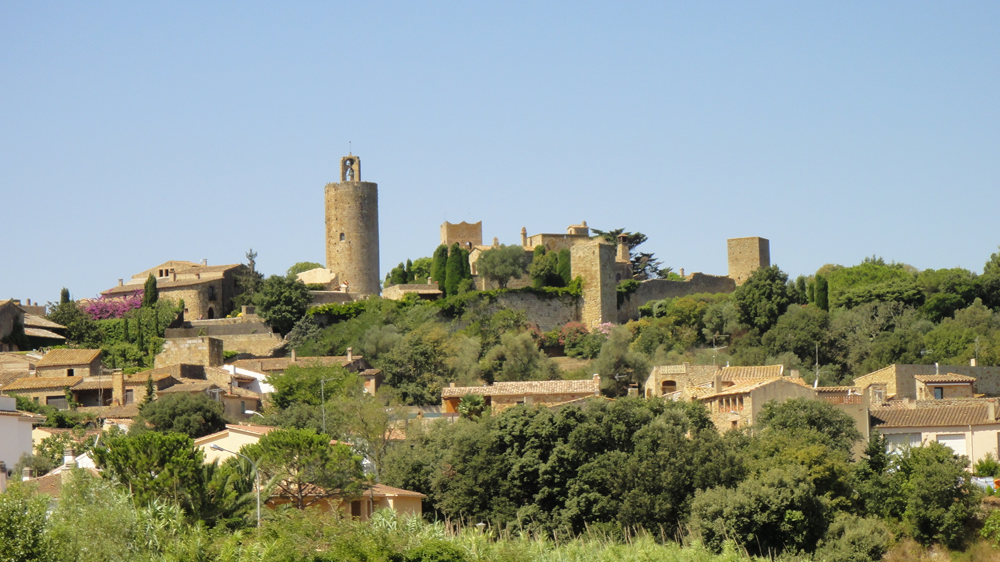
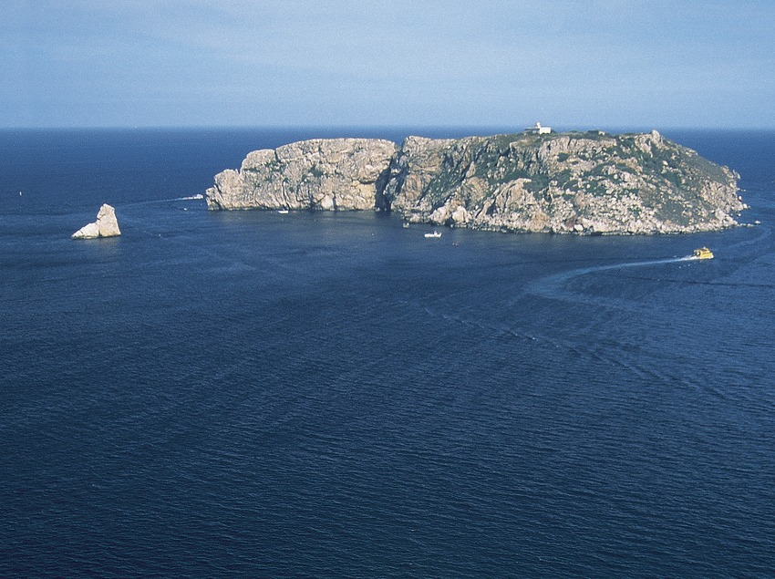
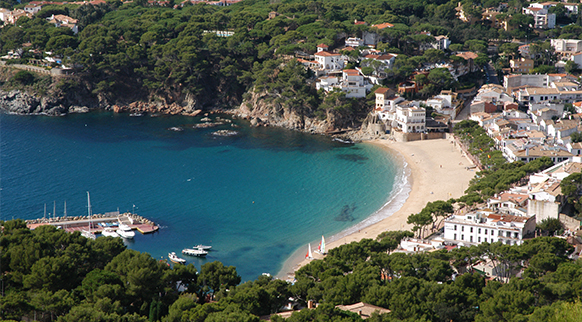

| L'EMPORDÀ | ||
| Bagur es un municipio español de la provincia de Gerona, situado en la comarca catalana del Bajo Ampurdán. Escrito tradicionalmente como Bagur por la variación en la transcripción de la vocal neutra, está documentado en la Edad Media como Begurio, probablemente nombre latinizado de un céltico Becuro. |  | |
|  | ||
|  | Calella de Palafrugell es una entidad de población del municipio español de Palafrugell, comarca del Bajo Ampurdán, provincia de Gerona, en Cataluña. Este pueblo de pescadores situado sobre una costa rocosa, constaba en 2009 de 782 habitantes, la mayoría gente mayor que pertenece a antiguas familias de pescadores. | |